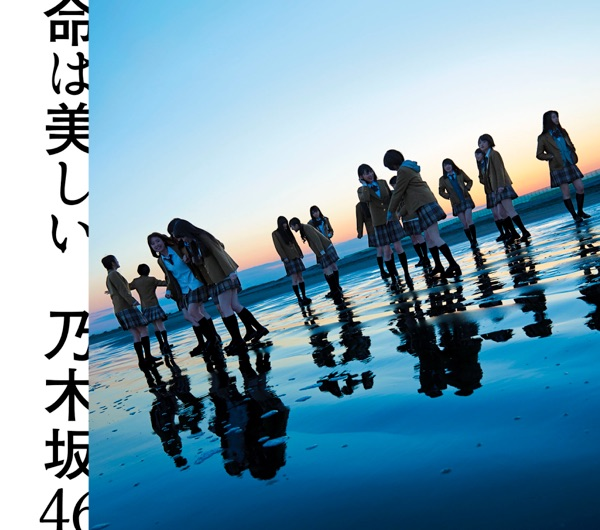

サカミチ
サカミチ命は美しいいのちはうつくしい

初収録リリース「命は美しい コンプリートパック」のジャケット
乃木坂46
発売日：2015-03-18
収録：命は美しい コンプリートパック（11thSG）
種別：表題曲
センター：西野七瀬
作曲：Hiroki Sagawa
編曲：Hiroki Sagawa
ライブ披露：189件
フォーメーション
上が後列、下が前列です。色付きがセンター。（公式発表に基づく）
 松村沙友理
松村沙友理 相楽伊織
相楽伊織 齋藤飛鳥
齋藤飛鳥 伊藤万理華
伊藤万理華 堀未央奈
堀未央奈 星野みなみ
星野みなみ 衛藤美彩
衛藤美彩 高山一実
高山一実 若月佑美
若月佑美 秋元真夏
秋元真夏 生駒里奈
生駒里奈 桜井玲香
桜井玲香 深川麻衣
深川麻衣松井玲奈
 白石麻衣
白石麻衣 西野七瀬
西野七瀬 生田絵梨花
生田絵梨花参加メンバー（18名）
秋元真夏、生田絵梨花、生駒里奈、伊藤万理華、衛藤美彩、齋藤飛鳥、桜井玲香、白石麻衣、高山一実、西野七瀬、橋本奈々未、深川麻衣、星野みなみ、松村沙友理、若月佑美、相楽伊織、堀未央奈、松井玲奈
この曲が披露されたライブ（189件）
新しい順に20件まで表示しています（全189件）。